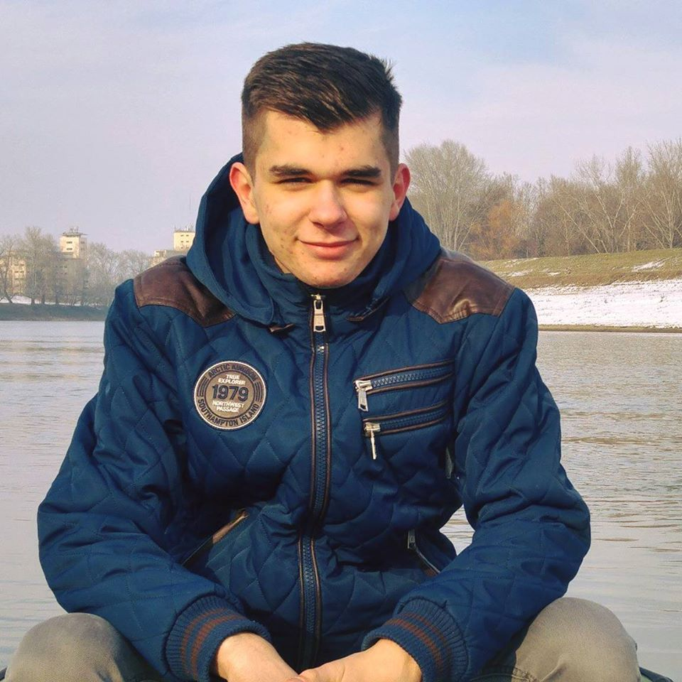

Rólam
2000.02.27-én születtem Mezőtúron, általános iskolát Túrkevén végeztem, ezután Szolnokon folytattam tanulmányaimat spec. matek szakon. Mindig is érdekelt a fizika és a járművek, ezért döntöttem úgy, hogy a Gépészmérnöki Kart választom.
